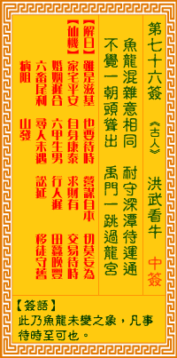

观音灵签第七十六签 【洪武看牛】 |
 | |||
鱼龙混杂意和同 耐守寒潭未济中 不觉一朝头角耸 禹门一跳到天宫 |
||||
| 【吉凶】 | 上中签 | 【宫位】 | 午宫 | |
| 【签语】 | 此卦鱼龙未变之象，凡事待时至可也。 | |||
| 【解曰】 | 虽是滋基 也要待时 营谋自本 切莫妄为 | |||
| 【仙机】 | 此签家宅平安，自身康泰，求财有，交易待时，婚姻迟合，六甲生男，行人迟，田蚕晚丰，六畜尾利，寻人未遇，讼延，移徙守旧，病阻 。 | |||
| 【详解】 | 龙与鱼混在一起看来毫无差异，困守寒潭无济于事;待有朝一日大展头角之时，届时自然鱼跃成龙，一飞冲天。 虽有址地，不如待时，营谋出入，切莫安为。此签禹门未透之象，凡事变化则吉。 本签者。禹门未透之象。凡百事变化则吉之意。鱼与龙两者混杂潭中意和同。耐守于潭却未济中时。唯有一朝头角耸之刻。君尔即可由禹门一跃到天宫去者。贵人 逢遇之曰。必有被擢拔之时。彼时商贾者财利勃发。家宅产业兴隆。另言之。虽有址地不如待时营谋出入切莫安为。 此签有”常持善念”之意。提醒当事人，多多将心比心。社会上大部分的人，都是以自我为中心，很少能真正地顾及到旁人的感受。然而每个人不论贫富、地位高 低，内心都想寻求一种快乐而不是痛苦的感觉。如果我们能有这种仁慈的、将心比心的观念，那么当我们在看待别人的时候，自然而然会产生一个”同理心”，了 解”己所不欲、勿施于人”的道理，再进而推己及人。凡事只问耕耘、不问收获，自己能够做得到的，一定自己先去做。 | |||
| 【典故】 | 朱洪武就是朱元璋，明朝第一任皇帝，他出身在贫苦农民家庭，幼年时替人放牛过日子后来又到皇觉寺当和尚，他参加了农民起义军，率 领军队十万之众，打败了元朝，建立了明朝，是为明太祖。朱元璋小时看牛，很是顽皮，传说他每天放牛上山，就口里喃喃念道：“草儿快快长，快快长，牛猛吃，草猛长”。说 完就去玩耍，那些草好似听他金口说话，越长越多，牛也长得又肥又壮 | |||